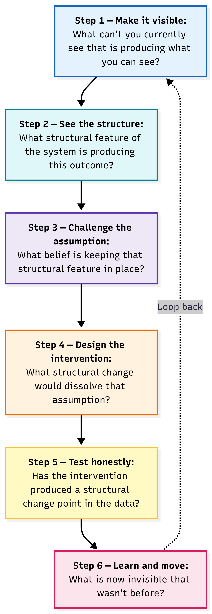

Making the Invisible Visible
Every major improvement framework developed in the last hundred years — Lean, Six Sigma, Theory of Constraints, Deming, Systems Thinking, Failure Demand, Bright Spots — is a response to the same fundamental problem. The symptom is visible. The cause is hidden. This page presents the framework above the methods: six steps for making the invisible visible, thirteen traps where the cause hides, and the instruments that dissolve each one.
A manager looking at a system that is not improving — under pressure to show results, with finite time and resource — cannot implement all the available frameworks simultaneously. She has to choose. And the frameworks do not tell her how.
The question that sits above all of them is: what are they all trying to do? The answer, when you strip away the domain-specific language and the decade in which each was developed, is the same for all of them. Every framework is a different instrument for making a different invisible thing visible. The manager does not need to choose between them. She needs to identify which invisible thing is in front of her, and reach for the instrument that makes that specific thing visible.
The Analyzer is the instrument for Step 5 — testing honestly whether an intervention has produced a structural change point in the data.
☰ Contents — click to expand
- The Senge Iceberg — why the symptom is never the cause
- The six-step Visibility Loop
- The thirteen visibility traps
- How the major frameworks map to each step
- The two principles that dissolve most traps
- Where the key tools sit — TOC, Bright Spots, Moonshot
- Applied to NHS corridor care
- The instruments on this site
1. The Senge Iceberg — why the symptom is never the cause
Peter Senge introduced the Iceberg Model in The Fifth Discipline (1990) as a way of understanding why systemic problems resist surface-level solutions. Every event that reaches management is the visible tip. The patterns that produce repeated events are visible if you look carefully. The structures — the rules, the incentives, the physical arrangements — are below the waterline. The mindsets that justify those structures are the deepest root.
Senge’s insight was that most organisations manage at the Event level. They react to what is visible. Occasionally they manage at the Pattern level — they notice the trend and try to reverse it. Rarely do they work at the Structure level, where the patterns are produced. Almost never at the Mindset level, where the structures are justified and maintained.
The visible tip. A Never Event. A corridor patient. A missed diagnosis. A customer complaint. A product release that fails. Management reacts here — investigating the individual event, taking immediate action, reporting to governance. Necessary but not sufficient. The event will recur because the structure that produced it is unchanged.
The recurring trend. Wrong-route Never Events at 17.5 per year for 15 years. A&E four-hour performance declining through four structural stages over 25 years. The same support ticket recurring every quarter. Bootstrap CUSUM makes patterns visible — distinguishing genuine structural change from normal variation, dating when a pattern started, confirming whether it has ended.
The system design that produces the pattern. Luer connectors physically compatible across routes. Social care budgets separate from NHS budgets. Procurement without clinical safety input. The customisation commitment that prevents standardisation. These are the Joiner Level 3 fixes — the ones that change what the system can produce rather than how people behave within it.
The beliefs that justify keeping the structures in place. “Safety is a behavioural problem.” “The delays are inevitable because customers are complex.” “That delayed discharge is not our problem — it is the local authority’s.” These are Joiner Level 3 Deep. No technical fix can dissolve a mindset. Only naming the assumption and testing it against evidence can.
Every improvement programme that addresses only the Event will see the Event recur. The Structure regenerates it. The Mindset justifies the Structure. This is not bad luck or poor execution. It is the predictable consequence of working above the waterline.
![The Senge Iceberg applied to a software company: Events (stalled growth, new products flop, customers revert to manual workflows) — Patterns below (thin profit margins, exhausted engineers supporting dozens of highly customised software versions) — THE WATERLINE — Structures (giving away custom development for free to close deals, product roadmap hijacked by loudest clients) — Mindsets at the deepest level (scarcity mindset: saying NO means losing referrals; we must bend our software to fit their chaos)](images/img-iceberg-model.png)
The Iceberg applied to a software company. The Events (stalled growth, products flopping) are visible. The Mindsets driving the structure (“saying NO means losing referrals”) are at the deepest root — and have never been named explicitly. No Level 1 or Level 2 fix can reach them.

The wrong-route Never Event traced through the Senge Iceberg. The reactive loop (dashed arrow) returns to the Structure level but never reaches the Mindset. Without challenging the belief that “safety is behavioural,” the event rate stays flat at 17.5 per year regardless of how many investigations are conducted.
Bootstrap CUSUM applied to 184 months of NHS A&E data finds four stages of structural decline and zero structural improvement change points. 25 years of policy interventions — all above the waterline. The pattern is unchanged because the structure producing it has not been addressed. — Why Nothing Has Worked: NHS A&E
2. The six-step Visibility Loop
The six steps below show what working through the framework looks like as a continuous cycle. Step 6 is not the end — it is the beginning of the next pass. Each time you dissolve a visibility failure, the constraint moves and a new invisible thing appears. The loop never closes. Each pass makes the next invisible thing visible.

The six steps in sequence. The dashed arrow from Step 6 back to Step 1 is the most important line in the diagram: the loop never ends. Each pass makes the next invisible thing visible and restarts the cycle with a harder question.
Map the event as a time series. Apply Bootstrap CUSUM. If the series is stable with no change point, individual events are common cause variation — the system is producing them routinely and individual event investigation will not change the rate. The pattern is the signal, not the event. This step makes the pattern visible.
Instruments: Bootstrap CUSUM · Root Cause Analysis · 5 Whys · Going to the Gemba · Bright SpotsOnce the pattern is confirmed as genuine, map the causal chain backwards from the outcome to the structural condition producing it. The structural condition is not the proximate cause of any individual event — it is the system feature that makes the class of events possible. For wrong-route medication: the structural cause is physical connector interoperability, not individual administration error.
Distinguishing signal from noise is the prerequisite for this step. Common cause variation — the normal output of a stable system — does not indicate a structural problem. It indicates a system performing as designed. Reacting to common cause variation as if it were a structural defect is Deming’s tampering: it adds cost, increases variation, and produces no improvement. Special cause variation — a data point or pattern outside the bounds of normal system behaviour — does indicate something worth investigating structurally. Bootstrap CUSUM distinguishes the two with statistical rigour. Only when a genuine structural signal is confirmed does Step 2 investigation make sense. Without that confirmation, the investigation addresses noise and leaves the structural cause untouched. See: Variation & SPC · Common cause variation · Special cause variation
Instruments: Root Cause Analysis · Variation & SPC · Causal Loop Diagrams · Finding the Real Constraint · Failure Demand · Leading IndicatorsEvery persistent structural problem has a belief keeping it there — a Joiner Level 3 Deep assumption held by the people with authority to change the structure. Naming that assumption is the pre-condition for designing an intervention that will dissolve it, rather than one that works around it temporarily. “Safety is a behavioural problem” is the belief that kept Luer connectors in place for 15 years after the structural fix was known.
Instruments: Joiner Levels of Fix · 5 Whys to mindset level · Why Nothing Changes · Evaporating CloudDesign the intervention at the right Joiner level. A Level 1 fix applied to a Level 3 problem will produce no Bootstrap CUSUM change point. The intervention must change what is structurally possible, not just what is procedurally required. This is where TRIZ separation principles, the Evaporating Cloud, and the Moonshot Protocol live. The dissolution is not a compromise between the two sides of the conflict — it is a questioning of the assumption that made the conflict seem unavoidable.
Instruments: Joiner Levels of Fix · Evaporating Cloud · Theory of Constraints · Divergent & Convergent ThinkingBefore implementing the fix, state in writing what you expect to see in the data and when. After implementation, run Bootstrap CUSUM on the outcome series periodically. A change point at the predicted confidence level is the honest confirmation. No change point within the expected window means the structural cause was not reached — return to Step 2. A mandate is not a change point. Action completion is not a change point. Only the data can confirm structural improvement.
PDSA is the improvement cycle that operationalises Step 5 — Plan = pre-committed prediction, Study = Bootstrap CUSUM, Act = what the result tells you about Step 6. The full explanation is on the Model for Improvement page.
For interventions whose outcomes take years to appear, Theory of Change (Carol Weiss, 1995) provides the method for designing intermediate measures — the “mini-steps” that must be visible before the final outcome can move. Each mini-step in the causal chain is itself a Bootstrap CUSUM series. A sequence of change points through the causal chain — appearing in the right order, with the right lead times between them — is the strongest possible evidence that the full theory of change is working. See: Leading Indicators — the six-step causal chain method →
Instruments: Bootstrap CUSUM — StepChange Analyzer · Types of Measures · Leading Indicators & Theory of Change · Corridor Care 2029 — live pre-committed predictionA confirmed structural change point raises a new question. The system has changed — what does it now produce that it didn’t before? What adjacent pattern has emerged? What constraint has moved? The improvement cycle does not end at verification. It restarts at Step 1 with a harder question. This is why the framework is not a methodology — it is a loop that never closes.
Instruments: Bright Spots · Stratify, Experiment, Disaggregate · Bootstrap CUSUM on updated series3. The thirteen visibility traps
In any complex organisation — NHS trust, manufacturer, software company, local authority — the same thirteen symptoms recur. Each is a visibility failure. Each has a different invisible cause. Together they form a diagnostic: a map of the places where the cause hides.
Each trap corresponds to a specific point in the Visibility Loop where the cause becomes invisible. Traps 1–4 are primarily Step 1 failures: the pattern is not seen at all. Traps 5–9 are Step 2 failures: the structural feature is misidentified or not reached. Traps 10–12 are Step 3 failures: the belief keeping the structure in place is never named. Trap 13 is the deepest — a Step 3 Deep failure where the belief is held by the people with the authority to change the structure, and has never been made explicit even to themselves.
Every trap also contains a contradiction — two legitimate requirements that appear to conflict. The organisation needs to scale AND deliver custom solutions. The trust needs to investigate incidents AND learn systemically. The boss needs to delegate AND maintain quality. These contradictions are not problems to be managed. They are assumptions to be dissolved — using the Evaporating Cloud to name the hidden assumption, and TRIZ separation principles to design the structural fix. The trap persists because the contradiction has never been made explicit.
Most problem areas do not trigger one trap. They trigger four to six simultaneously, and the traps reinforce each other. This is why single-method improvement programmes fail: Lean addresses Traps 3 and 7. Six Sigma addresses Traps 3 and 11. Theory of Constraints addresses Traps 4 and 5. Each addresses its cluster correctly — and leaves the others untouched.
The most vocal customers dominate the roadmap. Silent customers who are leaving register only months later as a revenue problem rather than a product problem.
Every customer request is individually reasonable. The cumulative cost — a codebase that cannot scale, a support burden that grows faster than revenue — is never visible as a system.
The same issues recur. Each fix addresses the visible symptom without reaching the structural cause. Deming called this tampering: reacting to common cause variation as if it were special cause.
The boss holds all key relationships, product knowledge, and strategy simultaneously. The assumption that only the boss can do these things has never been made explicit — and therefore never questioned.
An implementation process designed for a customer who is fully prepared, deployed into a reality where customers are never fully prepared. The gap between assumed conditions and actual conditions is invisible until someone maps it.
Customers are reluctant to upgrade. The constraint is not customer inertia — it is that the upgrade has never been made easy or safe enough. The design failure in the upgrade pathway is invisible because the customer’s reluctance is visible.
The team is constantly improving. Releases are frequent. The changelog is long. Bootstrap CUSUM on the metrics that matter shows no structural change point. The activity is real. The improvement is not.
Weekly progress meetings. Monthly reviews. Quarterly planning. The decisions made in those meetings address visible symptoms while the invisible cause compounds quietly beneath. A Level 1 and Level 2 system applied to a Level 3 problem.
Remote working has reduced informal information flow. The conversation that previously happened at the coffee machine — making the constraint visible before it became a crisis — no longer happens. The information exists. The visibility mechanism does not.
Regulatory requirements accumulate. Each is individually legitimate. Cumulatively they consume the capacity that should be going to structural improvement. Opportunity cost is always invisible. It never appears on a dashboard.
An intervention is applied. The metric improves. The improvement is attributed to the intervention. Nobody asks whether it would survive a Bootstrap CUSUM test, whether it is seasonal variation, or regression to the mean. Without a pre-committed prediction, every intervention appears to work.
The constraint sits outside the organisational boundary — in a supplier, a regulator, a partner, a different budget. The organisation can see everything inside its boundary. It cannot act on what lies outside — even when it suspects the constraint lies there. The Never Events case illustrates this with precision.
The practices that produced past success became embedded as the way things are done. Then the environment changed. What made the organisation great is now producing the wrong outcomes — and is invisible as a constraint precisely because it was once the source of advantage.
Look carefully at any of the thirteen traps and you will find: a legitimate goal, a structural feature that was once the right way to achieve it, a mindset that justifies keeping the structural feature in place even as conditions change, and a conflict between what the structure now produces and what the goal requires. The mindset is the hidden assumption keeping the conflict alive. The structural fix is not a compromise — it is a dissolution of the assumption that made the conflict seem unavoidable. This is the Evaporating Cloud applied to organisational visibility.
4. How the major frameworks map to each step
The frameworks that have proliferated over the last century are not competing answers to the same question. They are different instruments for making different invisible things visible. A manager who understands this does not need to choose between them. She needs to identify which invisible thing is in front of her.
| Visibility Loop step | What it makes visible | Frameworks that address it |
|---|---|---|
| Step 1 — See the pattern | Whether events are common cause or special cause; whether a structural change has occurred; when it occurred | Deming / SPC / Bootstrap CUSUM · Bright Spots · Root Cause Analysis · Failure Demand |
| Step 2 — Find the structural feature | The system design producing the pattern; the binding constraint; the structural gap between assumed and actual conditions | Theory of Constraints · Systems Thinking · Causal Loop Diagrams · 5 Whys · Lean (value stream mapping) |
| Step 3 — Name the belief | The mindset keeping the structure in place; the assumption that has never been questioned; the contradiction assumed to be unavoidable | Joiner Level 3 Deep · Evaporating Cloud · Psychological safety frameworks · Going to the Gemba |
| Step 4 — Design the dissolution | The structural change that makes the conflict disappear; Question 3 of the Model for Improvement: what changes can we make that will result in an improvement? | TRIZ separation principles · Evaporating Cloud · Joiner Level 3 fix · Poka-Yoke · Moonshot Protocol · Model for Improvement Q3 |
| Step 5 — Test honestly | Question 2 of the Model for Improvement: how will we know that a change is an improvement? PDSA Plan = pre-committed prediction. PDSA Study = Bootstrap CUSUM. A structural change point is the honest answer. | Bootstrap CUSUM · Pre-committed prediction · Model for Improvement Q2 · PDSA · Types of measures · Theory of Change · Leading Indicators |
| Step 6 — See what’s next | The new invisible constraint that appeared when the previous one was dissolved; the adjacent pattern; the next question | Bright Spots · Stratify and disaggregate · Bootstrap CUSUM on updated series |
5. The two principles that dissolve most traps
Once the contradiction keeping a trap alive has been named — the Step 3 work of the Visibility Loop — the Step 4 question is: what structural change would dissolve the assumption that makes the conflict seem unavoidable?
TRIZ (the Theory of Inventive Problem Solving, developed by Genrich Altshuller from analysis of 400,000 patents) identified 40 inventive principles for resolving technical and organisational contradictions. Across the thirteen visibility traps, two principles do most of the work. They are not compromises — they do not ask you to trade one requirement for another. They dissolve the assumption that made the conflict appear unavoidable in the first place.
Understanding these two principles is more useful than trying to apply all 40. Most organisational contradictions reduce to one of them. Together they explain why the structural fixes that actually prevent recurrence so often involve either separating the conflicting requirements into different layers (Segmentation) or arranging the conditions in advance so the harmful event cannot occur (Prior Action).
Resolves the traps where harm occurs because a dangerous condition was allowed to exist in the first place. The fix is to arrange the system in advance so the harmful condition cannot arise. This is the Bootstrap CUSUM principle applied to organisational design: the pre-committed prediction is Prior Action. The baseline is established before the programme launches, not reconstructed afterwards. Applies to: Traps 3, 7, 11, and 13.
Resolves the traps where the contradiction exists because two conflicting requirements are applied at the same level of the system simultaneously. The fix is to separate them into different levels or layers. Standardise the platform, customise the configuration. Segment core from variant. Separate accountability from budget. The dissolution of the variety contradiction in one sentence: accept variety at the point of contact — absorb it before it reaches the delivery system. Applies to: Traps 2, 4, 6, and 12.
![Two Key Principles to Prevent Recurrence: Principle 1 Fix Systems Not People — the blameless culture — human error is a symptom never a root cause, you cannot train away human fallibility, design environments where the wrong choice is hard and the right choice is easy. Principle 2 Defence in Depth — limit the blast radius — all humans machines and processes will eventually fail, do not aim for perfection aim for safe failure, catch errors in the preparation phase so the system fails safely quietly and recoverably.](images/img-moonshot-principles.png)
The two principles that the Moonshot Protocol holds throughout. Principle 1 dissolves the behavioural mindset that keeps structural fixes off the table. Principle 2 ensures that when Principle 1 is not yet fully implemented, the system fails safely rather than catastrophically.
6. Where the key tools sit in the six steps
Three tools cause the most confusion about where they belong in the Visibility Loop. Each addresses a specific step — and understanding which step clarifies both when to reach for the tool and what to do before and after it.
Evaporating Cloud and Theory of Constraints — Step 4
Both belong at Step 4 — designing the structural change that dissolves the assumption keeping the problem in place. But they approach Step 4 from different directions.
Theory of Constraints identifies the binding constraint — the single point in the system that limits throughput. Once identified (Step 2), it asks: what is preventing the constraint from being elevated? The answer is almost always an assumption that has never been questioned (Step 3). The Evaporating Cloud then names that assumption explicitly and designs its dissolution (Step 4). The Cloud is not standalone — it is the Step 4 instrument that follows from Steps 2 and 3.
The Evaporating Cloud works wherever there is a conflict that appears unavoidable — two requirements that seem mutually exclusive. The five-box structure: (1) the shared goal both sides are trying to achieve; (2) what Side A needs to achieve that goal; (3) what Side B needs to achieve that goal; (4) the conflict between A’s requirement and B’s requirement; (5) the hidden assumption that makes the conflict appear unavoidable. Dissolving assumption (5) makes the conflict in (4) disappear — without either side compromising. Applied to wrong-route Never Events: the conflict is “staff need standard connectors for efficiency” vs “connectors must be route-specific for safety.” The hidden assumption: that one connector system must serve both purposes. ENFit dissolves the assumption by separating connector types by route — a TRIZ Segmentation (Principle 1) solution.
TRIZ separation principles are the structural inventions that implement the dissolution. Principle 1 (Segmentation) separates conflicting requirements into different domains — different layers of the system, different points in time, different scales. Principle 10 (Prior Action) arranges the conditions in advance so the harmful event cannot occur. Together they explain the ENFit solution (Segmentation in space), the pre-committed Bootstrap CUSUM prediction (Prior Action in time), and the Universal Core / Configuration Layer architecture that dissolves the customisation contradiction (Segmentation into layers). A TRIZ concept page is on the development list — for now, the Evaporating Cloud page provides the full worked example.
TOC finds the constraint and names the policy blocking its elevation. The Evaporating Cloud names the five-box structure of the conflict and surfaces the hidden assumption. TRIZ Principles 1 and 10 provide the structural invention that implements the dissolution and makes it physically or organisationally real. Together: TOC identifies what to dissolve, the Cloud names why it has persisted, TRIZ invents the mechanism that dissolves it concretely.
Theory of Constraints → · Evaporating Cloud → · Moonshot Protocol — full worked example →
Bright Spots — Steps 1 and 6
Bright Spots belong at two points in the loop — and the purpose is different at each.
At Step 1, Bright Spots answer: what can’t I see that is producing what I can see? If the overall pattern is poor performance, Bright Spots make visible the exceptions — the wards, teams, or trusts already doing what the system as a whole cannot. The invisible thing Step 1 makes visible is not just the problem but the proof that the problem is solvable. Watford General made corridor care visible as a solvable structural problem by demonstrating that patient-level discharge coordination produced dramatically different outcomes from the standard model. The Bright Spot is evidence that the structural cause is not inevitable.
At Step 6, after a structural change point has been confirmed, Bright Spots ask: what is now visible that wasn’t before? After Watford demonstrated the model, the new invisible thing was: which other trusts are replicating it, and what are they learning that Watford didn’t? Step 6 restarts the loop at a harder question — and Bright Spots at this stage find where the next structural learning is already happening before the rest of the system has noticed.
Step 1: who is already succeeding at what you are trying to do, and what structural conditions make that possible? Step 6: after a change point, who is already doing what the changed system makes possible — and what can they see that the rest of the system cannot yet?
The Moonshot Protocol — all six steps operationalised
The Moonshot Protocol is not a tool for one step. It is the full Visibility Loop expressed as a structured ten-step process across three phases — what working through all six steps looks like in practice when the problem is complex, the constraint is structural, and the contradiction has never been explicitly named.

The ten steps across three phases. Phase 1 (Diagnostic) completes Visibility Loop Steps 1–3. Phase 2 (Resolution) is entirely Step 4. Phase 3 (Pivot) completes Steps 5 and 6.
The Moonshot Protocol is used when all other attempts have failed — when the event keeps recurring, when the Joiner Level 1 and 2 fixes have been applied and Bootstrap CUSUM shows no change point, and when it is time to work explicitly at the Level 3 structural contradiction. It is not the first tool to reach for. It is the tool for when the loop has been running without completing past Step 2.
See the Moonshot Protocol in full — RCA Diagrams & Templates →
7. Applied to NHS corridor care — all thirteen traps active simultaneously
The Never Events case has eight active traps simultaneously. The corridor care crisis has all thirteen. This is why 25 years of single-method improvement programmes have produced no Bootstrap CUSUM change point in A&E performance.
📊 Bootstrap CUSUM on NHS A&E performance — 184 months
25 years of NHS A&E policy interventions. Four stages of structural decline. Zero structural improvement change points. The metrics moved. The system did not. Every intervention addressed a visible symptom while the structural cause — delayed transfer of care consuming 13,700 beds per day — remained untouched because it sits outside the A&E boundary in social care budgets the NHS does not control.
Read the full analysis → · Corridor Care 2029 — pre-committed prediction →
The Watford General bright spot — Matthew Coats’s singular focus on urgent and emergency care — dissolved Traps 4, 8, 9, and 12 simultaneously by creating a control centre that co-located decision-making authority across the boundary. UEC performance improved. And then, counterintuitively, elective, cancer, and financial performance all followed — because UEC was the binding constraint on system flow. Read the Bright Spots analysis →
8. The instruments on this site — what each one makes visible
Test your own data
The StepChange Analyzer applies Bootstrap CUSUM to your time series — free, browser-based, no data uploaded. Upload a CSV of your incident rate, quality metric, or improvement outcome. The Analyzer will tell you whether a structural change has occurred — or whether what you are seeing is noise.
▶ Open the StepChange Analyzer